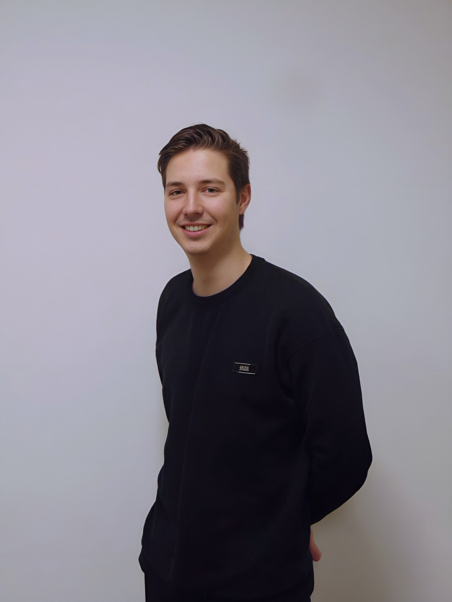

Over Mij
Hoi! Mijn naam is Jesse Raaijmakers. Momenteel studeer ik Human Resource Management op Avans Breda. Op deze website vind je straks mijn portfolio pagina en mijn reisblog!

Hoi! Mijn naam is Jesse Raaijmakers. Momenteel studeer ik Human Resource Management op Avans Breda. Op deze website vind je straks mijn portfolio pagina en mijn reisblog!